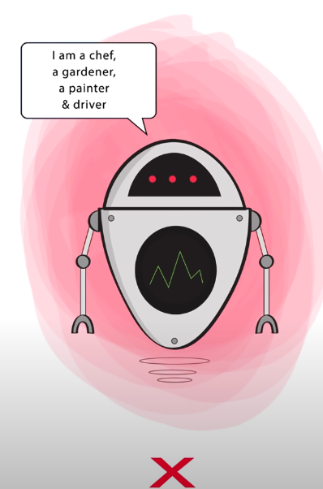
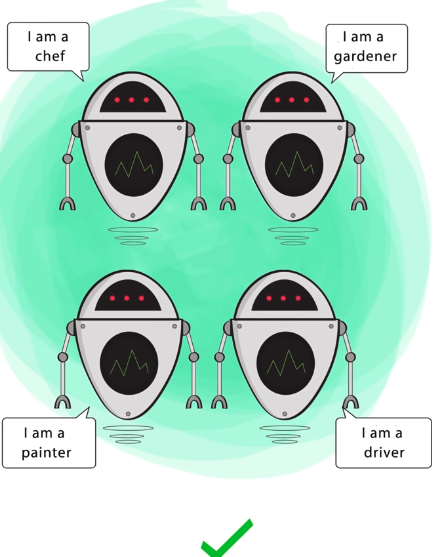
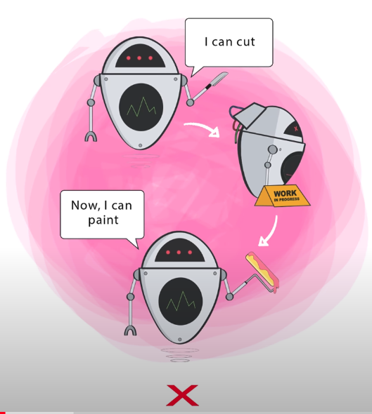
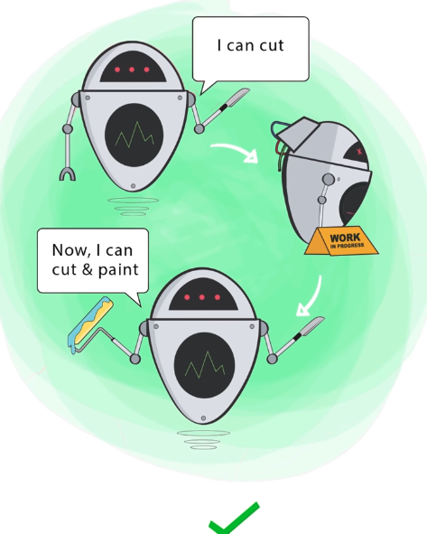
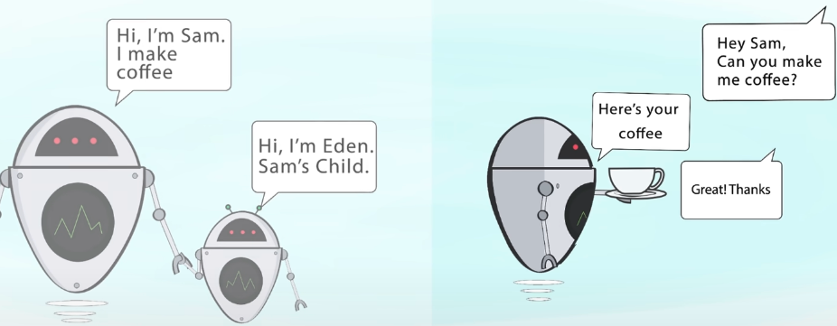
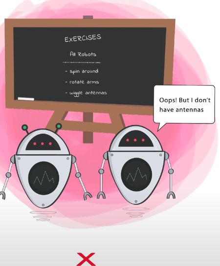
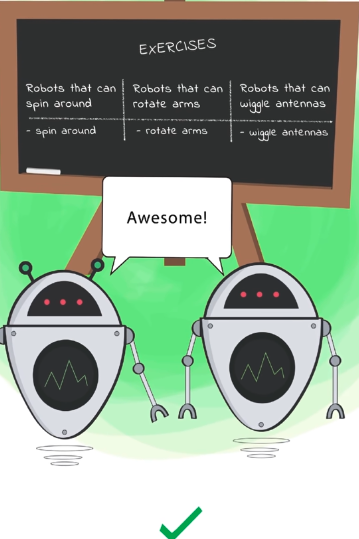
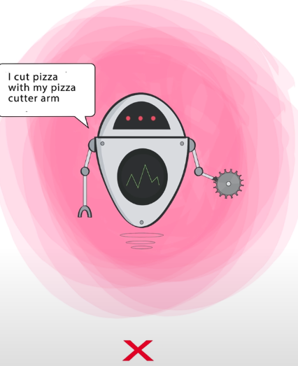
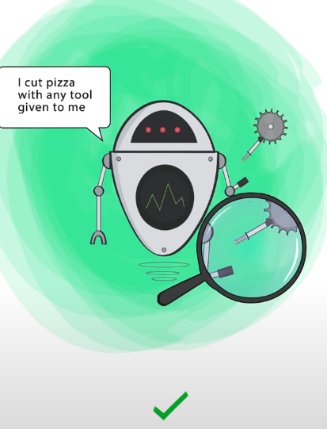

Aqui abaixo iremos descrever superficialmente em qual consiste cada um dos 5 pilares de SOLID.
-- S -- Single Responsability Principle Consiste em um príncipio que diz que uma classe, componente, entidade e até funcao deve ter apenas uma responsabilidade. Uma boa dica que temos para que possamos seguir o principio da responsabilidae única, é registrar o nome de funcoes/etc com o que ela está fazendo, por exemplo: registerUser. Caso tenhamos dificuldade em fazer isso, significa que talvez exista responsabilidade demais nessa funcao.
 --O -- Open-Closed Principle Classes Entidades e Funcoes devem estar abertas para extensoes e fechadas para modificacoes.
 -- L -- Liskov Substitution Principle Defende que se tivermos uma classe (classeA) e dela criarmos uma subclasse classe (ClasseB) utiliando herança, a subclasse (classeB) essa instancia tem que conseguir substituir o objeto da classe principal, sem quebrar a aplicação. Respeitar o principio de Liskov forca nossa aplicacao a ter as abstracoes em nivel correto e ser mais consistente. Um exemplo é a classe ave(), com os métodos bicar e voar. Dessa forma, ao criarmos o pica-pau, todos os métodos farã sentido pois ele pica e voa. Ao criarmos o pinguin, ele irá bicar porém irá enfrentar problemas ao voar. Então podemos concluir que a abstracao está feita de forma errada, e o principio sempre irá nos fazer pensar o que realmente a classe pai deve fornecer em comum a todas as outras subclasses.
-- I -- Interface Segregation Principle Diz que clientes (Classe) não devem ser forcados a depender/Implementar de métodos que eles nao usam. Isso acaba sendo reflexo de respeitar os tres primeiros principios porém especializados em interfaces.
 -- D -- Dependency Inversion Principle A parte mais importante desse principio é que um módulo nao deve depender de detalhes de implementacao de outro módulo diretamente. Deve existir uma camada de abstracao (Interface) ali no meio.
 